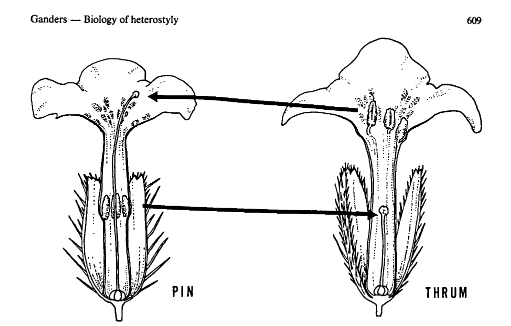
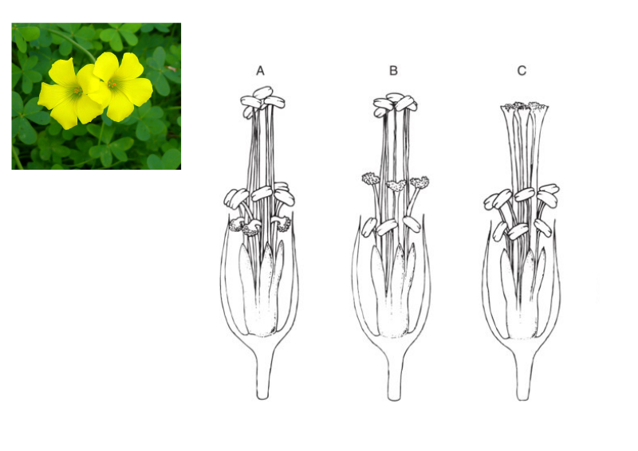
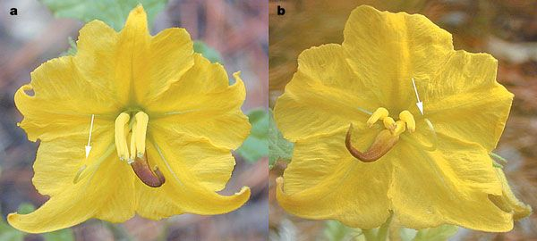
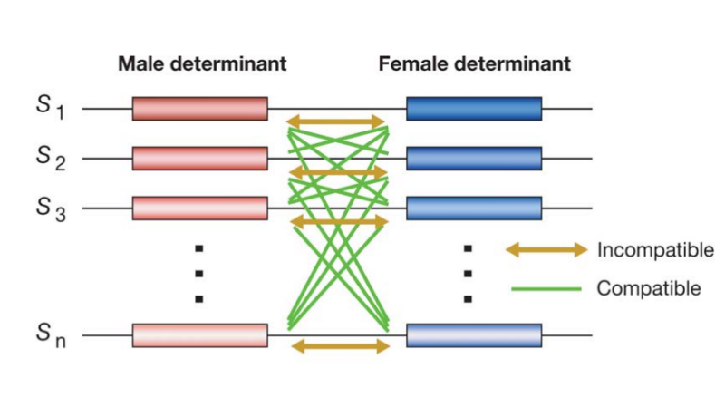
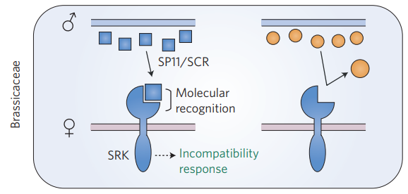
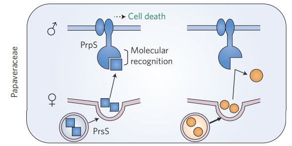
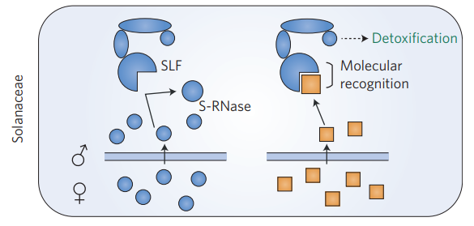

Estrategias Reproductivas en Plantas
Santiago Benitez-Vieyra
Ecología y Evolución de las Interacciones Planta-polinizador
Estrategias sexuales
Hercogamia y Dicogamia
Sistema de incompatibilidad
Estrategias sexuales
(sexual systems)
Estrategias sexuales
Según sus órganos sexuales las flores pueden ser
- Pistiladas (femeninas)
- Estaminadas (masculinas)
- Perfectas (hermafroditas)
Estrategias sexuales
Según la separación de las funciones masculina y femenina
- Monoclinos (ambas funciones en un tipo de flor)
- Diclinos (diferentes funciones en diferentes flores)
Para la memoria: clino del griego cama o lecho.
Estrategias sexuales
Según la separación de las funciones masculina y femenina
- Monoica (ambas funciones en un tipo de individuo)
- Dioica (diferentes funciones en diferentes individuos)
Para la memoria: oico del griego casa.
Polimorfismos sexuales
| monoclino (perfectas) |
monoica |
“hermafroditas” |
| diclina |
monoica |
dos tipos de flores en un individuo |
| diclina |
andromonoica |
flores perfectas y estaminadas en un individuo |
| diclina |
gimnomonoica |
flores perfectas y pistiladas en un individuo |
| diclina |
dioica |
dos tipos de flores en diferentes individuos |
| diclina |
androdioica |
ind. con flores estaminadas e ind. con flores prefectas |
| diclina |
gimnodioica |
ind. con flores pistiladas e ind. con flores prefectas |
| triclina (poligamo) |
monoica |
flores estaminadas, pistiladas y perfectas en un individuo |
| triclina (poligamo) |
trioica |
ind. diferentes con flores estaminadas, pistiladas y perfectas |
El “género” es plantas se define mejor de una manera cuantitativa, como el procentaje de progenie producida por medio de gametas masculinas o femeninas.
Teoría de Juegos: Conceptos básicos
El éxito reproductivo (fitness) de un individuo no es constante, sino que depende de las proporciones relativas (frecuencias) de diferentes fenotipos en la población. El fitness es dependiente de la frecuencia.
Una estrategia evolutivamente estable (EES) es una estrategia, o combinación de estrategias, que cuando es adoptada por una población en un determinado ambiente no puede ser invadida por ninguna estrategia alternativa.
Proporciones sexuales (R. Fisher, W.D. Hamilton)
- Supongamos que nacen menos machos que hembras en cierta población.
- Un macho tendrá más perspectivas de aparearse que una hembra, dejará más descendencia.
- Los padres genéticamente predispuestos a tener más machos tendrán entonces más nietos.
- Esta predisposición genética se extenderá en la población.
- A medida que nos acercamos a la proporción 1:1, la ventaja de producir machos se hace menor, al superarla, se vuelve más exitoso producir hembras.
- la proporción 1:1 es la proporción de equilibrio y es una EES.
Hipótesis
- Darwin interpretó las diferentes estartegias de las plantas como adaptaciones que evitan las consecuencias negativas de la endogamia y promueven la polinización cruzada.
- Recientemente se reconocío su rol en evitar la interferencia sexual y el desperdicio de gametas.
Hercogamia
Separación espacial entre los órganos que presentan y los que receptan el polen.
Hercogamia recíproca - Heterostilia

Hercogamia recíproca - Heterostilia
Controlada por un supergen (múltiples loci unidos por ligamiento)
- Autoincompatibilidad (vemos luego…)
- Altura del estilo
- Altura de los estambres
- Tamaño del polen
- Tamaño de las papilas estigmáticas
Hercogamia recíproca - Tristilia

Enantiostilia
 Heteranthera multiflora Jesson & Barret 2002, Nature 417:707.
Dicogamia (hermafroditismo secuencial)
Protandria en Passiflora caerulea Imágenes: inaturalist.
Sistema de autoincompatibilidad
(self-incompatibility)
Sistema de autoincompatibilidad (SI)
- Involucra un sistema de reconocimiento entre el polen y el pistilo, que determina la inhibición selectiva del desarrollo del tubo polínico.
- Es considerado una adaptación para evitar la autopolinización.
- En la mayoría de los casos es controlado por un único locus multialélico llamado S.
- S incluye (al menos) dos unidades que se trascriben, responsables de la determinación masculina y femenina.

Takayama & Isogai 2005. Annu. Rev. Plant Biol. 56:467–89
- Gametofítico: El fenotipo SI del polen es determinado por su propio genotipo haploide.
- Esporofítico: El fenotipo SI del polen es determinado por el genotipo diploide de la antera.
 Fujii et al. 2016. Nature Plants 2:16130.
Tipo Brassicaceae (Esporofítico)
- Det. masculino: cubierta del polen (tapete de la antera).
- Det. femenino: membrana de las células papilares.
- La interacción lleva al rechazo (no se conoce cómo).
 Fujii et al. 2016. Nature Plants 2:16130.
Tipo Papaeraceae (Gametofítico)
- Det. masculino: membrana plasmática del polen.
- Det. femenino: secretada por las células papilares.
- La interacción lleva a la muerte celular programada del polen.
 Fujii et al. 2016. Nature Plants 2:16130.
Tipo Solanaceae (Gametofítico)
- Det. masculino: proteína ligando en el tubo polínico.
- Det. femenino: RNasa presente en el tejido estilar.
- La compatibilidad lleva a la detoxificación de la RNasa.
¿Cómo estudiar los sistemas de incompatibilidad?
- Polinización abierta (PA)
- Autopolinización espontánea (APE)
- Apomixis (APO)
- Polinización cruzada manual (PCM)
- Autopolinización o Geitonogamia manual (APM)
Índice de Incompatibilidad
\[ISI = semillas_{autopol. manual} / semillas_{pol.cruzada.manual}\]
| 1 |
autocompatibles |
| 0.2 - 1 |
parcialmente compatibles |
| 0- 0.2 |
incompatibles |